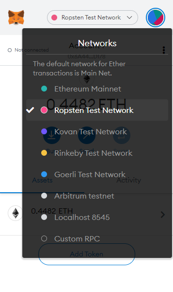

TokenIP est une dapp. C'est-à-dire un programme déployé dans la blockchain (ethereum). Pour pouvoir interagir avec elle, vous allez devoir utiliser l'extension Metamask téléchargeable à cette adresse.
MetaMask est un portefeuille de crypto et votre porte d’entrée aux applications décentralisées. Une fois l'extension téléchargée et votre portefeuille constitué, vous devez vous mettre sur le réseau Ropsten; qui est un réseau test de la blockchain ethereum.
Pour déployer le token, vous allez nécessiter des ethers afin de payer les frais de transaction. Sur ce lien , vous pouvez en réclamer gratuitement en y indiquant votre adresse.